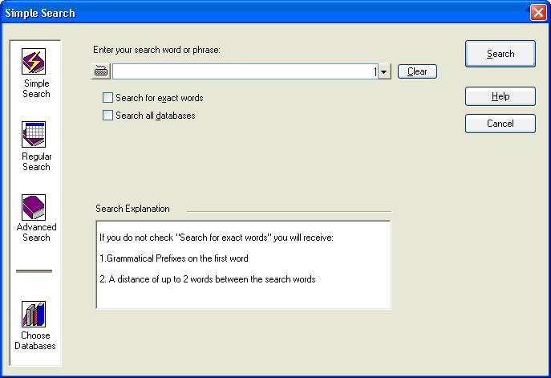

Bar Ilan Software Support - Chapter 2 A Quick Tour of Responsa
While you probably won’t be able to master all the features of Bar Ilan Reponsa “standing on one foot,” you will be able to master the basic features quickly and without difficulty. Let’s take a brief tour of the program and see.
• Be patient; we suggest that you go through this entire section (which won’t take long) step by step, as this will ultimately make it easier to master Responsa.
• Since you will be searching for ex pressions in Hebrew, it is important to have some familiarity with the standard Hebrew keyboard. (Alternatively, you can use the virtual keyboard; see below, p. 132.) If you have a U.S. or European keyboard which does not display Hebrew letters, see Appendix A, “The Hebrew Keyboard.”
• To type in Hebrew, click CTRL + RIGHT SHIFT. If you’re using the phonetic keyboard or the virtual keyboard (see below, p. 132), this isn’t necessary.
1. To start Bar Ilan CD, turn on your computer and double-click the Responsa icon. After the main Responsa window appears, you’re ready to start using Responsa.
2. To start searching, click Search on the menu bar. The search window will appear on screen.

• If the search window on your screen looks different from the one in the picture, click Simple Search and then proceed.
3. Next, choose the database in the Bar Ilan Software which you want to search. For example, if you want to locate the Talmudic source of Hillel’s statement about learning the entire Torah while standing on one foot, you will want to search the Talmud Bavli database.
To choose a database, click the Choose Databases button. Then select the database you want to search — in this case, Talmud Bavli — by clicking the red book icon next to it. This icon will turn green, indicating that the database you specified was selected. (If green book icons appear next to other databases, click those icons to cancel these choices.)

Confirm your selections by clicking OK. The search screen will reappear.
4. Now you’re ready to actually perform the search in the Bar Ilan CD. To do so, type your search request, i.e., the words על רגל אחת. Note that there’s no need to type the entire ex pression, עומד על רגל אחת, as this will make the search slower.
• If you made a mistake typing your search request, click Clear and then retype the search request.
Next, click the Search button or press ENTER, and Bar Ilan Responsa will begin searching.
When Responsa is finished searching (this should take only a few seconds), you’ll see the results displayed on screen: the ex pression על רגל אחת appears only once in the Talmud Bavli, in מסכת שבת דף לא עמוד א.
If you want to perform another search, click Search from the menu bar again. Your previous search request will be displayed again, in case you want to repeat it. To clear this search request and enter a new one, click Clear. Your previous query will be cleared from the screen, and you can begin typing a new search request on Bar Ilan CD.
5. Next, let’s try a slightly more complicated search — this time, we’ll try to locate all the material in the Talmud on קידוש השם. Now, since such material can be phrased in many different ways — e.g., קידוש השם, לקדש שם שמים, etc. — you will have to specify a more complex search request.
Keep in mind that what you’re looking for is a combination of two elements: (1) all grammatical forms derived from the root קדש (e.g., לקדש, קידוש, מקדש, קידש, etc.); and (2) the words השם (as in קידוש השם) and שם (as in לקדש שם שמים) — in other words, the word שם with grammatical prefixes.
Due to the relative complexity of this search request, the simple search option in Bar Ilan Responsa won’t suffice, so you’ll have to perform a Regular Search. To do so:
a. Click Regular Search from the search window.
b. Type קדש in the box labeled Component 1. To indicate that you want to find all grammatical forms derived from the root קדש, click the Root button.
c. Type the next search component, שם, in the box labeled Component 2. To indicate that you want to find occurrences of this word with grammatical prefixes, click the Grammatical Prefixes button.
d. Click Search to perform the search in the Bar Ilan Software.

When Responsa is finished searching, you will see the results listed in a new window. Note that the number of search results located (37) appears in the title bar of the new window, and the search results, which include both the sources of the relevant passages and text from these passages, are numbered.
You will also notice that the first few search results displayed on screen are not really relevant, so press the PGDN key to page through your results and find relevant material.
• Note that the search results in the new window do not displace those in the old search results window; rather, the previous search results window is displayed in the background of Bar Ilan Software until you close it.
• If you want to switch windows, click Window on the menu bar, and then click the title of the window which you want to view.
6. You can display your search results in various ways. To do so, click Display from the menu bar. A pull-down menu will appear. Click Long, Brief, or Sources to display longer excerpts of text, shorter excerpts, or just a list of the relevant sources.
7. You can also display longer sections of text. To do so, double-click any word in the particular search result you want to view, or double-click the line listing the source of this result (the source line). A new window (an expanded display window) will open up on screen in Bar Ilan CD, displaying a longer section of text.
8. Ready to print? Click the window whose contents you want to print to make it the active window, and then click File from the menu bar. If you want to print only the material currently displayed on screen, click Print Window. If you want to print all the material located by Responsa, even if it is not currently displayed on screen, click Print All.
• If the printout doesn’t come out exactly the way you want, don’t worry; see below, Chapter 11, “Printing,” for advice on solving printing problems.
9. Next, let’s display a text of your choice. For example, suppose you want to look at מסכת ברכות, דף ב עמוד א. Click Text from the menu bar in Bar Ilan Responsa, and the text box will open up. Then:
a. Click the plus sign next to the desired database — in this case, Talmud Bavli.
b. Click the plus sign next to the desired book — מסכת ברכות.
c. Click the plus sign next to the desired page — דף ב.
d. Finally, double-click the desired folio (עמוד א). The text you specified will be displayed on screen momentarily.
That’s it — you’ve mastered the basics of Bar Ilan Responsa! If you wish, you can continue reading this manual for information about other features of Responsa, or you can consult the index or the on-line help for information about specific features which interest you. Alternatively, you might prefer to experiment with the program and learn it that way.
לתמיכה בפרוייקט השו"ת בעברית Go back to Bar Ilan Software support menu